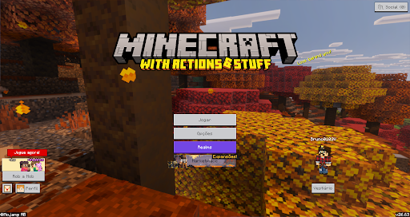

NEVER LAND
Minecraft Bedrock Dedicated Server (BDS)
Verificando BDS...
IP:
never-land.rocks
|
Porta:
19132
Um servidor comunitário focado no survival puro, onde jogadores colaboram para erguer castelos, fazendas automatizadas e vilarejos interligados. Aprimorado com 10 addons balanceados que não quebram o jogo.

Todos os addons foram testados e configurados no BDS para máxima performance em nuvem.
Adiciona painel completo estilo Java com coordenadas, FPS, bioma e direção cardeal na tela.
Minimapa dinâmico com waypoints para marcar o Castelo do Reino, minas e portais do Nether.
Derrube troncos completos e quebre blocos de minério interligados agachando. Muito mais dinamismo.
Replantio automático imediato ao colher plantações adultas. Mantém a despensa comunitária cheia.
Ferramentas para erigir paredes, pisos e pontes no reino com velocidade e economia de cliques.
Tochas e lanternas na mão emitem luz em tempo real enquanto você anda no escuro.
Fumaça mais alta e realista para fogueiras de descanso, lareiras e sinalizadores distantes.
Interfaces belíssimas e coloridas para cada tipo de madeira de baús, barris e shulkers.
Guia completo de receitas integrado no Suporte de Poções do jogo para fácil consulta.
Pacote estético completo para Bedrock com visual limpo, botões intuitivos e menus ágeis.
Mantemos um ambiente cooperativo e acolhedor para construir, minerar e relaxar em comunidade.
Doe itens sobressalentes nos baús do Spawn e colabore com os novatos que acabaram de chegar.
Não há roubos de baús marcados nem PvP sem consentimento. Construções pessoais são respeitadas.
O addon replanta com 1 clique, então mantenha os campos agrícolas do reino sempre férteis e cuidados.
Uso de hacks, dupers destrutivos ou destruição de construções comunitárias resulta em ban imediato.
Siga as instruções para conectar pelo celular, tablet, console ou PC Windows.
Inicie o Minecraft Bedrock atualizado no seu celular, Windows 10/11 ou console.
Clique em Jogar, selecione a aba Servidores e role até Adicionar Servidor.
Clique em Jogar! O jogo baixa automaticamente os addons e texturas do servidor.
Descrição completa

Inicie seu Minecraft Bedrock (com ou sem pacotes visuais) e clique em Jogar para acessar a lista de mundos e servidores.